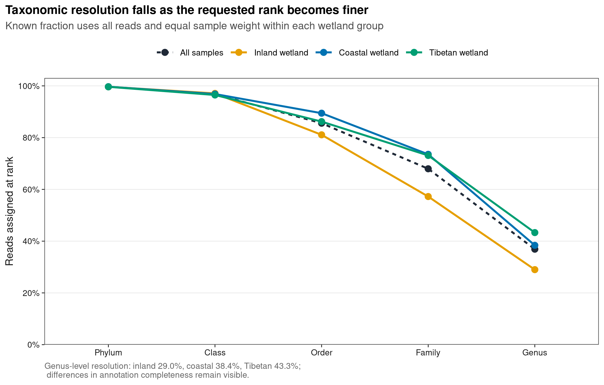
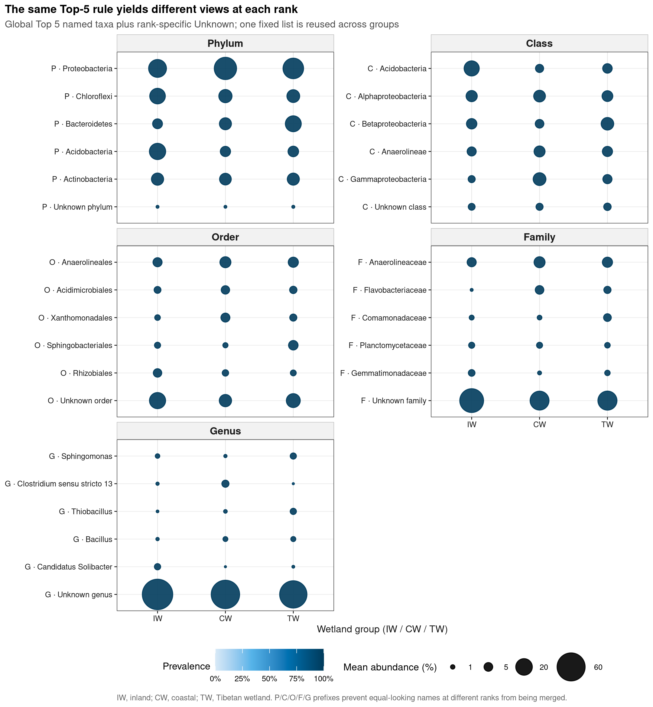
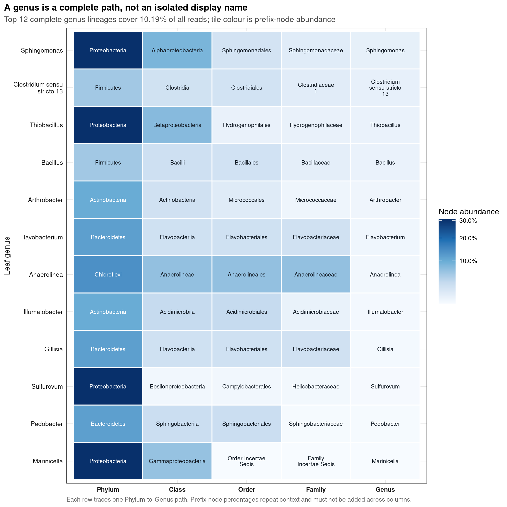
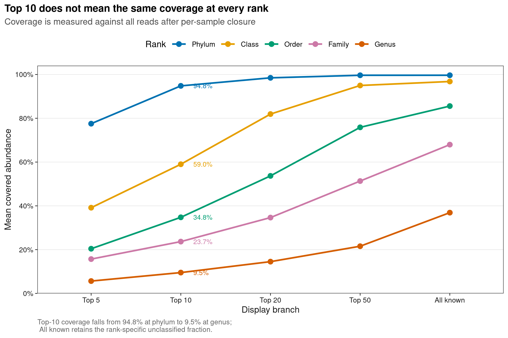

options(timeout = 600)
data_url <- "https://raw.githubusercontent.com/petemeng/microbiome-best-practices/3cb6a817e0c73ab7ecbec1cedc1ad80cbb9ecfaa/"
input_files <- c(
"data/small/metadata.tsv",
"data/small/otutab.tsv",
"data/small/taxonomy.tsv"
)
for (path in input_files) {
dir.create(dirname(path), recursive = TRUE, showWarnings = FALSE)
if (!file.exists(path)) download.file(paste0(data_url, path), path, mode = "wb", quiet = TRUE)
}多分类级组成（门→纲→目→科→属逐级）
分类层级越细，信息损失越大
微生物组论文常把门、纲、目、科、属的组成并排展示：上层级交代群落骨架，下层级追踪更具体的分类单元。真正困难的不是把 Phylum 换成 Genus，而是保证每个面板仍使用同一批样本、同一分母和可追踪的分类路径，同时避免把跨层级同名 taxon 合并。
本页使用 microeco 2.0.0 随包分发的中国湿地土壤 16S 数据。原研究 An et al. (2019)比较 inland、coastal 与 Tibetan wetland 的细菌群落；Liu et al. (2021)给出了三件套数据入口和逐分类级丰度计算框架。层级图的表达思路参考 Metacoder，但这里从公开 count、taxonomy 和 metadata 重新计算并绘制四张原创图。
重要先给结论
以全部 reads 为分母、先逐样本闭合再等权平均，能够命名到 Phylum、Class、Order、Family、Genus 的 reads 比例依次为 99.65%、96.80%、85.57%、67.96%、36.89%。最大分辨率损失发生在 Family→Genus，一步减少 31.07 个百分点。
属水平可命名比例在 inland、coastal、Tibetan wetland 分别为 28.99%、38.38%、43.31%。因此删除 Unknown genus 后重新归一化，会给三组施加不同放大倍数；本页主结果始终保留全部 reads 分母。
共有 754 条完整 Phylum→Genus lineage，合计覆盖 34.38% reads；丰度最高的 12 条完整 lineage 仅覆盖 10.19%。另外有 324 个 features（2.52% reads）出现“Family 未知、Genus 已知”，这些断裂路径被原样保留，不根据 genus 反推或补写 family。
下载并读取本次分析的数据
需要 R，以及 ggplot2、ragg、readr、scales、svglite。本次使用中国湿地的 OTU count 表、分类表和样本信息表。
在一个新建的文件夹中运行以下代码，下载文件后按文中的顺序继续分析：
library(ggplot2)
set.seed(20260727)
font_pub <- "sans"
pal_pub <- c(
blue = "#0072B2",
orange = "#E69F00",
green = "#009E73",
vermillion = "#D55E00",
purple = "#CC79A7",
sky = "#56B4E9",
yellow = "#F0E442",
grey = "#6B7280"
)
scale_color_pub <- function(..., values = unname(pal_pub)) {
ggplot2::scale_color_manual(..., values = values)
}
scale_fill_pub <- function(..., values = unname(pal_pub)) {
ggplot2::scale_fill_manual(..., values = values)
}
theme_pub <- function(base_size = 10, base_family = font_pub) {
ggplot2::theme_bw(base_size = base_size, base_family = base_family) +
ggplot2::theme(
panel.grid.minor = ggplot2::element_blank(),
panel.grid.major = ggplot2::element_line(
colour = "#E6E6E6", linewidth = 0.25
),
axis.text = ggplot2::element_text(colour = "#1A1A1A"),
axis.title = ggplot2::element_text(colour = "#1A1A1A"),
axis.ticks = ggplot2::element_line(
colour = "#1A1A1A", linewidth = 0.3
),
plot.title.position = "plot",
plot.title = ggplot2::element_text(
face = "bold", size = ggplot2::rel(1.15)
),
plot.subtitle = ggplot2::element_text(colour = "#4D4D4D"),
plot.caption = ggplot2::element_text(colour = "#666666", hjust = 0),
strip.background = ggplot2::element_rect(
fill = "#F2F2F2", colour = "#B3B3B3", linewidth = 0.3
),
strip.text = ggplot2::element_text(face = "bold"),
legend.key = ggplot2::element_blank(),
legend.position = "top"
)
}
save_pub <- function(
plot, file_base, width = 89, height = 70, units = "mm",
dpi = 600, write_svg = TRUE, write_tiff = TRUE,
base_family = font_pub
) {
dir.create(dirname(file_base), recursive = TRUE, showWarnings = FALSE)
ggplot2::ggsave(
paste0(file_base, ".pdf"), plot,
width = width, height = height, units = units,
device = grDevices::cairo_pdf, family = base_family, bg = "white"
)
if (isTRUE(write_svg)) {
ggplot2::ggsave(
paste0(file_base, ".svg"), plot,
width = width, height = height, units = units,
device = svglite::svglite, bg = "white"
)
}
ggplot2::ggsave(
paste0(file_base, ".png"), plot,
width = width, height = height, units = units, dpi = dpi,
device = ragg::agg_png, bg = "white"
)
if (isTRUE(write_tiff)) {
ggplot2::ggsave(
paste0(file_base, ".tiff"), plot,
width = width, height = height, units = units, dpi = dpi,
device = ragg::agg_tiff, compression = "lzw", bg = "white"
)
}
invisible(plot)
}
clean_taxon <- function(x, rank_name) {
x <- trimws(as.character(x))
x <- sub("^[A-Za-z]__", "", x)
missing <- is.na(x) | x == "" | tolower(x) %in% c(
"unassigned", "unclassified", "unknown", "na", "nan"
)
x[missing] <- paste("Unknown", tolower(rank_name))
x
}
wrap_label <- function(x, width = 16L) {
vapply(
x,
function(value) paste(strwrap(value, width = width), collapse = "\n"),
character(1)
)
}读取三件套并锁定方向、ID 和哈希
read_keyed_tsv <- function(path) {
x <- readr::read_tsv(
path,
show_col_types = FALSE,
progress = FALSE,
name_repair = "minimal",
na = character(),
col_types = readr::cols(.default = readr::col_character())
)
ids <- as.character(x[[1L]])
stopifnot(!anyDuplicated(ids))
out <- as.data.frame(x[-1L], check.names = FALSE)
rownames(out) <- ids
out
}
input_paths <- c(
otutab = "data/small/otutab.tsv",
taxonomy = "data/small/taxonomy.tsv",
metadata = "data/small/metadata.tsv"
)
expected_sha256 <- c(
otutab = "76fa79c38da889f35978dc86da4641a270961746709ff38049ee5f67e3c6f7a3",
taxonomy = "725280bb9a0cd9bda7b540022e92af945ceed52527f8b2d220b055b4489f6901",
metadata = "df24771dccf27607ddf922c6bca2cafa876d946fbe2e09d14b601accce66ba64"
)
observed_sha256 <- vapply(
input_paths,
function(path) digest::digest(
file = path, algo = "sha256", serialize = FALSE
),
character(1)
)
stopifnot(identical(observed_sha256, expected_sha256))
otutab <- read_keyed_tsv(input_paths[["otutab"]])
taxonomy <- read_keyed_tsv(input_paths[["taxonomy"]])
metadata <- read_keyed_tsv(input_paths[["metadata"]])
counts <- as.matrix(otutab)
storage.mode(counts) <- "numeric"
stopifnot(
identical(rownames(counts), rownames(taxonomy)),
setequal(colnames(counts), rownames(metadata)),
all(counts >= 0),
all(counts == round(counts)),
all(rowSums(counts) > 0),
all(colSums(counts) > 0)
)
metadata <- metadata[colnames(counts), , drop = FALSE]
group_display <- c(
IW = "Inland wetland",
CW = "Coastal wetland",
TW = "Tibetan wetland"
)
group_codes <- c("IW", "CW", "TW")
metadata$SampleID <- rownames(metadata)
metadata$GroupDisplay <- unname(group_display[metadata$Group])
sample_depths <- colSums(counts)
relative_feature <- sweep(counts, 2L, sample_depths, "/")
stopifnot(max(abs(colSums(relative_feature) - 1)) <= 1e-12)
data.frame(
Features = nrow(counts),
Samples = ncol(counts),
Reads = sum(counts),
MinimumDepth = min(sample_depths),
MaximumDepth = max(sample_depths)
) Features Samples Reads MinimumDepth MaximumDepth
1 13628 90 1619670 10364 37374先查看三张表，而不是只接受一个看不见内部结构的对象：
otutab[1:5, 1:5, drop = FALSE]
taxonomy[1:6, , drop = FALSE]
metadata[1:6, , drop = FALSE] S1 S2 S3 S4 S5
OTU_4272 1 0 1 1 0
OTU_236 1 4 0 2 35
OTU_399 9 2 2 4 4
OTU_1556 5 18 7 3 2
OTU_32 83 9 19 8 102
Kingdom Phylum
OTU_4272 k__Bacteria p__Firmicutes
OTU_236 k__Bacteria p__Chloroflexi
OTU_399 k__Bacteria p__Proteobacteria
OTU_1556 k__Bacteria p__Acidobacteria
OTU_32 k__Archaea p__Miscellaneous Crenarchaeotic Group
OTU_706 k__Bacteria p__Actinobacteria
Class Order Family
OTU_4272 c__Bacilli o__Bacillales f__
OTU_236 c__ o__ f__
OTU_399 c__Betaproteobacteria o__Nitrosomonadales f__Nitrosomonadaceae
OTU_1556 c__Acidobacteria o__Subgroup 17 f__
OTU_32 c__ o__ f__
OTU_706 c__Actinobacteria o__Frankiales f__Nakamurellaceae
Genus Species
OTU_4272 g__ s__
OTU_236 g__ s__
OTU_399 g__ s__
OTU_1556 g__ s__
OTU_32 g__ s__
OTU_706 g__Nakamurella s__
Group Type Saline SampleID GroupDisplay
S1 IW NE Non-saline soil S1 Inland wetland
S2 IW NE Non-saline soil S2 Inland wetland
S3 IW NE Non-saline soil S3 Inland wetland
S4 IW NE Non-saline soil S4 Inland wetland
S5 IW NE Non-saline soil S5 Inland wetland
S6 IW NE Non-saline soil S6 Inland wetland下载完整 R 脚本。脚本包含数据下载、计算和图形导出。
首次使用时安装 R 包
install.packages(c(
"digest", "ggplot2", "jsonlite", "ragg", "readr",
"scales", "svglite", "systemfonts"
))多分类级不是把五张表直接拼起来
各分类层级分别归一化，不能跨层级相加
对样本 (j)，把 feature counts 聚合到 rank (r) 后：
[ p_{krj}=, k p{krj}=1. ]
同一条 read 会同时贡献给它的 phylum、class、order、family 和 genus。五个 rank 各自闭合到 100%，并不意味着把五级比例相加后得到新的“总丰度”；那会把同一证据重复计算五次。
联合键至少是 Rank + Lineage，不能只用显示名
裸名称并不天然唯一。本数据有 13 个名称出现在多个 rank，例如 Acidobacteria 同时可见于 Phylum 和 Class。Family 层还有 Family XII 与 FamilyI 分别对应多个父系路径。联合表应保存：
RankQualifiedTaxon = "P · Acidobacteria"
LineageKey = "Acidobacteria > ... > Candidatus Solibacter"前者防止跨 rank 合并，后者防止同一 rank 内的多父系同名标签被错误压成一个 lineage。
缺失父级是证据边界，不是待自动补齐的空格
本数据在 Phylum→Class、Class→Order、Order→Family 三个 transition 中没有“父级未知、子级已知”的记录；Family→Genus 却有 324 个 features、17 个 genus 落在这种断裂路径中。它们可能来自参考库的 rank 结构或分类器输出，不能仅凭 genus 名称反推 family。
Incertae Sedis 也不等于空注释：它表示来源数据库提供了一个未定位置的命名标签。本页保留原标签、单独审计，但不把它写成已完全解析的标准分类单元。
同一个 Top 10，在不同 rank 覆盖率完全不同
按 90 个样本的等权均值选择全局 Top 10，Phylum、Class、Order、Family、Genus 的平均覆盖率分别为 94.80%、59.00%、34.77%、23.67%、9.52%。Top-N 是排版决定，不是跨 rank 等价的生物学过滤器。
深入：完整 lineage 与“该 rank 有名称”为什么不是一回事
“Genus 有名称”只检查 genus 单元格是否非空；“完整 Phylum→Genus lineage”要求五级连续可追踪。本例 genus named fraction 为 36.89%，完整 genus lineage 只有 34.38%，差出的 2.52% 正是 family 缺失但 genus 已知的断裂路径。层级图若要求连线，应使用完整 lineage；rank 独立汇总则可以保留这些 genus，但必须显式标注缺失父级。
逐级聚合，同时保留分类层级关系
逐层聚合，并在标签中标明分类层级
rank_names <- c("Phylum", "Class", "Order", "Family", "Genus")
rank_prefix <- c(
Phylum = "P", Class = "C", Order = "O", Family = "F", Genus = "G"
)
unknown_labels <- setNames(paste("Unknown", tolower(rank_names)), rank_names)
taxonomy_clean <- as.data.frame(
setNames(
lapply(
rank_names,
function(rank_name) clean_taxon(taxonomy[[rank_name]], rank_name)
),
rank_names
),
check.names = FALSE,
stringsAsFactors = FALSE
)
rownames(taxonomy_clean) <- rownames(taxonomy)
rank_relative <- list()
rank_counts <- list()
resolution_rows <- list()
for (rank_name in rank_names) {
labels <- taxonomy_clean[[rank_name]]
rank_counts[[rank_name]] <- rowsum(counts, labels, reorder = TRUE)
rank_relative[[rank_name]] <- sweep(
rank_counts[[rank_name]], 2L, sample_depths, "/"
)
stopifnot(
max(abs(colSums(rank_relative[[rank_name]]) - 1)) <= 1e-12,
!anyDuplicated(rownames(rank_relative[[rank_name]]))
)
rel_rank <- rank_relative[[rank_name]]
unknown_label <- unknown_labels[[rank_name]]
known_taxa <- setdiff(rownames(rel_rank), unknown_label)
known_order <- known_taxa[order(
rowMeans(rel_rank[known_taxa, , drop = FALSE]),
decreasing = TRUE
)]
top10 <- head(known_order, 10L)
known_sample <- 1 - rel_rank[unknown_label, ]
resolution_rows[[rank_name]] <- data.frame(
Rank = rank_name,
Labels = nrow(rel_rank),
KnownLabels = length(known_taxa),
KnownMean = mean(known_sample),
KnownMinimum = min(known_sample),
KnownMaximum = max(known_sample),
UnknownMean = mean(rel_rank[unknown_label, ]),
Top10CoverageMean = mean(colSums(rel_rank[top10, , drop = FALSE])),
IncertaeSedisFeatures = sum(grepl(
"Incertae Sedis", labels, fixed = TRUE
)),
stringsAsFactors = FALSE
)
}
rank_resolution <- do.call(rbind, resolution_rows)
rank_resolution$ResolutionLossPP <- c(
NA_real_,
100 * head(rank_resolution$KnownMean, -1L) -
100 * tail(rank_resolution$KnownMean, -1L)
)
rank_resolution Rank Labels KnownLabels KnownMean KnownMinimum KnownMaximum
Phylum Phylum 56 55 0.9965362 0.9746454 0.9993507
Class Class 128 127 0.9679785 0.9173091 0.9924631
Order Order 217 216 0.8557273 0.6178719 0.9737159
Family Family 394 393 0.6796275 0.3875696 0.9294762
Genus Genus 772 771 0.3689439 0.1556430 0.7847552
UnknownMean Top10CoverageMean IncertaeSedisFeatures ResolutionLossPP
Phylum 0.003463782 0.94803047 0 NA
Class 0.032021456 0.59004532 28 2.855767
Order 0.144272720 0.34765278 100 11.225126
Family 0.320372461 0.23671066 172 17.609974
Genus 0.631056113 0.09521805 0 31.068365门到属的标签数依次为 56、128、217、394、772；标签越来越多，并不代表可解释 reads 越来越多。属水平正好相反：大量 reads 停在更高 rank。
逐组审计注释分辨率，不删除 Unknown
group_resolution_rows <- list()
for (rank_name in rank_names) {
rel_rank <- rank_relative[[rank_name]]
known_sample <- 1 - rel_rank[unknown_labels[[rank_name]], ]
group_resolution_rows[[length(group_resolution_rows) + 1L]] <- data.frame(
GroupCode = "ALL",
Group = "All samples",
Rank = rank_name,
KnownMean = mean(known_sample),
KnownMinimum = min(known_sample),
KnownMaximum = max(known_sample),
stringsAsFactors = FALSE
)
for (group_code in group_codes) {
ids <- metadata$SampleID[metadata$Group == group_code]
values <- known_sample[ids]
group_resolution_rows[[length(group_resolution_rows) + 1L]] <- data.frame(
GroupCode = group_code,
Group = unname(group_display[group_code]),
Rank = rank_name,
KnownMean = mean(values),
KnownMinimum = min(values),
KnownMaximum = max(values),
stringsAsFactors = FALSE
)
}
}
group_rank_resolution <- do.call(rbind, group_resolution_rows)
subset(group_rank_resolution, Rank == "Genus") GroupCode Group Rank KnownMean KnownMinimum KnownMaximum
17 ALL All samples Genus 0.3689439 0.1556430 0.7847552
18 IW Inland wetland Genus 0.2899131 0.1556430 0.4689417
19 CW Coastal wetland Genus 0.3838468 0.2367641 0.7847552
20 TW Tibetan wetland Genus 0.4330718 0.2877018 0.6707779
警告不要把 known-only 比例冒充 all-read relative abundance
Inland wetland 的 Unknown genus 平均为 71.01%，Tibetan wetland 为 56.69%。若各样本删除 Unknown 后重新闭合，两个组的已知 genus 会被不同程度放大；这既改变数值，也改变组间视觉距离。
建 lineage key，审计断裂路径与同名冲突
feature_equal_mean <- rowMeans(relative_feature)
known_matrix <- vapply(
rank_names,
function(rank_name) {
taxonomy_clean[[rank_name]] != unknown_labels[[rank_name]]
},
logical(nrow(taxonomy_clean))
)
colnames(known_matrix) <- rank_names
complete_depth <- apply(known_matrix, 1L, function(x) {
first_unknown <- which(!x)[1L]
if (is.na(first_unknown)) length(x) else first_unknown - 1L
})
lineage_key <- apply(
taxonomy_clean[, rank_names, drop = FALSE],
1L,
paste,
collapse = " > "
)
lineage_gap_rows <- list()
for (i in 2:length(rank_names)) {
parent_rank <- rank_names[[i - 1L]]
child_rank <- rank_names[[i]]
parent_unknown <- taxonomy_clean[[parent_rank]] == unknown_labels[[parent_rank]]
child_unknown <- taxonomy_clean[[child_rank]] == unknown_labels[[child_rank]]
gap <- parent_unknown & !child_unknown
lineage_gap_rows[[length(lineage_gap_rows) + 1L]] <- data.frame(
Transition = paste(parent_rank, "to", child_rank),
ChildKnownParentUnknownFeatures = sum(gap),
ChildKnownParentUnknownTaxa = length(unique(
taxonomy_clean[[child_rank]][gap]
)),
EqualSampleMean = sum(feature_equal_mean[gap]),
stringsAsFactors = FALSE
)
}
lineage_gap_audit <- do.call(rbind, lineage_gap_rows)
lineage_gap_audit Transition ChildKnownParentUnknownFeatures ChildKnownParentUnknownTaxa
1 Phylum to Class 0 0
2 Class to Order 0 0
3 Order to Family 0 0
4 Family to Genus 324 17
EqualSampleMean
1 0.00000000
2 0.00000000
3 0.00000000
4 0.02518277再检查同一 rank 内，一个裸名称是否对应多个父系：
collision_rows <- list()
for (i in 2:length(rank_names)) {
rank_name <- rank_names[[i]]
labels <- taxonomy_clean[[rank_name]]
known_labels <- setdiff(unique(labels), unknown_labels[[rank_name]])
for (taxon in known_labels) {
mask <- labels == taxon
parent_paths <- apply(
taxonomy_clean[
mask,
rank_names[seq_len(i - 1L)],
drop = FALSE
],
1L,
paste,
collapse = " > "
)
parent_paths <- sort(unique(parent_paths))
if (length(parent_paths) > 1L) {
collision_rows[[length(collision_rows) + 1L]] <- data.frame(
Rank = rank_name,
Taxon = taxon,
ParentLineages = length(parent_paths),
ParentPaths = paste(parent_paths, collapse = " | "),
EqualSampleMean = sum(feature_equal_mean[mask]),
stringsAsFactors = FALSE
)
}
}
}
label_collision_audit <- do.call(rbind, collision_rows)
label_collision_audit Rank Taxon ParentLineages
1 Family FamilyI 3
2 Family Family XII 2
ParentPaths
1 Cyanobacteria > Cyanobacteria > SubsectionI | Cyanobacteria > Cyanobacteria > SubsectionIII | Cyanobacteria > Cyanobacteria > SubsectionIV
2 Firmicutes > Bacilli > Bacillales | Firmicutes > Clostridia > Clostridiales
EqualSampleMean
1 0.001376438
2 0.004929644Family XII 和 FamilyI 必须由 parent path 区分。若只按 family 显示名聚合，它们可以作为 rank composition 的一个标签；若要画 lineage 或追踪父子关系，则必须使用完整路径键。
固定每级 Top 5，并保留 Top-N coverage 敏感性
rank_top_rows <- list()
rank_group_rows <- list()
top_taxa_by_rank <- list()
for (rank_name in rank_names) {
rel_rank <- rank_relative[[rank_name]]
unknown_label <- unknown_labels[[rank_name]]
known_taxa <- setdiff(rownames(rel_rank), unknown_label)
known_means <- rowMeans(rel_rank[known_taxa, , drop = FALSE])
top5 <- names(sort(known_means, decreasing = TRUE))[1:5]
top_taxa_by_rank[[rank_name]] <- top5
rank_top_rows[[rank_name]] <- data.frame(
Rank = rank_name,
TopRank = seq_along(top5),
Taxon = top5,
RankQualifiedTaxon = paste0(rank_prefix[[rank_name]], " · ", top5),
OverallMean = unname(known_means[top5]),
stringsAsFactors = FALSE
)
for (group_code in group_codes) {
ids <- metadata$SampleID[metadata$Group == group_code]
for (taxon in c(top5, unknown_label)) {
values <- rel_rank[taxon, ids]
rank_group_rows[[length(rank_group_rows) + 1L]] <- data.frame(
Rank = rank_name,
GroupCode = group_code,
Group = unname(group_display[group_code]),
Taxon = taxon,
RankQualifiedTaxon = paste0(rank_prefix[[rank_name]], " · ", taxon),
MeanRelativeAbundance = mean(values),
MeanPercent = 100 * mean(values),
Prevalence = mean(values > 0),
stringsAsFactors = FALSE
)
}
}
}
rank_top_taxa <- do.call(rbind, rank_top_rows)
rank_taxon_group_summary <- do.call(rbind, rank_group_rows)
rank_top_taxa Rank TopRank Taxon
Phylum.1 Phylum 1 Proteobacteria
Phylum.2 Phylum 2 Chloroflexi
Phylum.3 Phylum 3 Bacteroidetes
Phylum.4 Phylum 4 Acidobacteria
Phylum.5 Phylum 5 Actinobacteria
Class.1 Class 1 Acidobacteria
Class.2 Class 2 Alphaproteobacteria
Class.3 Class 3 Betaproteobacteria
Class.4 Class 4 Anaerolineae
Class.5 Class 5 Gammaproteobacteria
Order.1 Order 1 Anaerolineales
Order.2 Order 2 Acidimicrobiales
Order.3 Order 3 Xanthomonadales
Order.4 Order 4 Sphingobacteriales
Order.5 Order 5 Rhizobiales
Family.1 Family 1 Anaerolineaceae
Family.2 Family 2 Flavobacteriaceae
Family.3 Family 3 Comamonadaceae
Family.4 Family 4 Planctomycetaceae
Family.5 Family 5 Gemmatimonadaceae
Genus.1 Genus 1 Sphingomonas
Genus.2 Genus 2 Clostridium sensu stricto 13
Genus.3 Genus 3 Thiobacillus
Genus.4 Genus 4 Bacillus
Genus.5 Genus 5 Candidatus Solibacter
RankQualifiedTaxon OverallMean
Phylum.1 P · Proteobacteria 0.307133967
Phylum.2 P · Chloroflexi 0.138240898
Phylum.3 P · Bacteroidetes 0.116492475
Phylum.4 P · Acidobacteria 0.113375701
Phylum.5 P · Actinobacteria 0.100095632
Class.1 C · Acidobacteria 0.089633197
Class.2 C · Alphaproteobacteria 0.087102869
Class.3 C · Betaproteobacteria 0.078018054
Class.4 C · Anaerolineae 0.069398355
Class.5 C · Gammaproteobacteria 0.067400343
Order.1 O · Anaerolineales 0.069398355
Order.2 O · Acidimicrobiales 0.036600910
Order.3 O · Xanthomonadales 0.034599230
Order.4 O · Sphingobacteriales 0.032748272
Order.5 O · Rhizobiales 0.030755374
Family.1 F · Anaerolineaceae 0.069398355
Family.2 F · Flavobacteriaceae 0.028304264
Family.3 F · Comamonadaceae 0.021210247
Family.4 F · Planctomycetaceae 0.020549638
Family.5 F · Gemmatimonadaceae 0.017383823
Genus.1 G · Sphingomonas 0.012858135
Genus.2 G · Clostridium sensu stricto 13 0.012673358
Genus.3 G · Thiobacillus 0.010813747
Genus.4 G · Bacillus 0.010772492
Genus.5 G · Candidatus Solibacter 0.009378094Top-N sensitivity 将 Top 5/10/20/50 与该 rank 的全部已知标签放在同一分母下比较：
top_n_rows <- list()
for (rank_name in rank_names) {
rel_rank <- rank_relative[[rank_name]]
unknown_label <- unknown_labels[[rank_name]]
known_taxa <- setdiff(rownames(rel_rank), unknown_label)
known_means <- rowMeans(rel_rank[known_taxa, , drop = FALSE])
known_order <- names(sort(known_means, decreasing = TRUE))
branches <- list(
`Top 5` = head(known_order, 5L),
`Top 10` = head(known_order, 10L),
`Top 20` = head(known_order, 20L),
`Top 50` = head(known_order, 50L),
`All known` = known_order
)
for (label in names(branches)) {
selected <- branches[[label]]
coverage <- colSums(rel_rank[selected, , drop = FALSE])
top_n_rows[[length(top_n_rows) + 1L]] <- data.frame(
Rank = rank_name,
NLabel = label,
SelectedN = length(selected),
MeanCoverage = mean(coverage),
MinimumCoverage = min(coverage),
MaximumCoverage = max(coverage),
UnknownMean = mean(rel_rank[unknown_label, ]),
stringsAsFactors = FALSE
)
}
}
rank_topn_sensitivity <- do.call(rbind, top_n_rows)
subset(rank_topn_sensitivity, NLabel == "Top 10") Rank NLabel SelectedN MeanCoverage MinimumCoverage MaximumCoverage
2 Phylum Top 10 10 0.94803047 0.86515573 0.9891697
7 Class Top 10 10 0.59004532 0.40544229 0.7098990
12 Order Top 10 10 0.34765278 0.12144807 0.5932802
17 Family Top 10 10 0.23671066 0.09883876 0.5526710
22 Genus Top 10 10 0.09521805 0.02201933 0.3296409
UnknownMean
2 0.003463782
7 0.032021456
12 0.144272720
17 0.320372461
22 0.631056113检查合并读数或排除未注释类群后结果是否改变
aggregation_rows <- list()
denominator_rows <- list()
for (rank_name in rank_names) {
rel_rank <- rank_relative[[rank_name]]
counts_rank <- rank_counts[[rank_name]]
unknown_label <- unknown_labels[[rank_name]]
top5 <- top_taxa_by_rank[[rank_name]]
for (group_code in group_codes) {
ids <- metadata$SampleID[metadata$Group == group_code]
equal_vector <- rowMeans(rel_rank[, ids, drop = FALSE])
pooled_vector <- rowSums(counts_rank[, ids, drop = FALSE]) /
sum(counts_rank[, ids, drop = FALSE])
aggregation_rows[[length(aggregation_rows) + 1L]] <- data.frame(
Rank = rank_name,
GroupCode = group_code,
Group = unname(group_display[group_code]),
TotalVariation = 0.5 * sum(abs(equal_vector - pooled_vector)),
MaximumTaxonDifferencePP = 100 * max(abs(
equal_vector - pooled_vector
)),
stringsAsFactors = FALSE
)
known_total <- 1 - rel_rank[unknown_label, ids]
for (taxon in top5) {
all_read_mean <- mean(rel_rank[taxon, ids])
known_only_mean <- mean(rel_rank[taxon, ids] / known_total)
denominator_rows[[length(denominator_rows) + 1L]] <- data.frame(
Rank = rank_name,
GroupCode = group_code,
Group = unname(group_display[group_code]),
Taxon = taxon,
AllReadMean = all_read_mean,
KnownOnlyMean = known_only_mean,
InflationPP = 100 * (known_only_mean - all_read_mean),
stringsAsFactors = FALSE
)
}
}
}
aggregation_sensitivity <- do.call(rbind, aggregation_rows)
denominator_sensitivity <- do.call(rbind, denominator_rows)
denominator_sensitivity[
which.max(denominator_sensitivity$InflationPP),
,
drop = FALSE
] Rank GroupCode Group Taxon AllReadMean
65 Genus IW Inland wetland Candidatus Solibacter 0.02383324
KnownOnlyMean InflationPP
65 0.09656292 7.272969已知属在 inland wetland 的分母最小，Candidatus Solibacter 从 all-read 2.38% 变成 known-only 9.66%，增加 7.27 个百分点。这不是生物学变化，而是分母改变。
选择完整优势 lineage，而不是孤立 genus 名
complete_mask <- complete_depth == length(rank_names)
complete_rel <- rowsum(
relative_feature[complete_mask, , drop = FALSE],
lineage_key[complete_mask],
reorder = TRUE
)
complete_means <- rowMeans(complete_rel)
complete_order <- names(sort(complete_means, decreasing = TRUE))
top12_lineages <- head(complete_order, 12L)
lineage_rows <- list()
ladder_rows <- list()
for (lineage_rank in seq_along(top12_lineages)) {
key <- top12_lineages[[lineage_rank]]
path_index <- match(key, lineage_key)
path <- unlist(
taxonomy_clean[path_index, rank_names, drop = FALSE],
use.names = TRUE
)
leaf_values <- complete_rel[key, ]
for (group_code in group_codes) {
ids <- metadata$SampleID[metadata$Group == group_code]
lineage_rows[[length(lineage_rows) + 1L]] <- data.frame(
LineageRank = lineage_rank,
LineageKey = key,
GroupCode = group_code,
Group = unname(group_display[group_code]),
MeanRelativeAbundance = mean(leaf_values[ids]),
Prevalence = mean(leaf_values[ids] > 0),
stringsAsFactors = FALSE
)
}
for (rank_i in seq_along(rank_names)) {
rank_name <- rank_names[[rank_i]]
prefix_match <- rep(TRUE, nrow(taxonomy_clean))
for (prefix_i in seq_len(rank_i)) {
prefix_rank <- rank_names[[prefix_i]]
prefix_match <- prefix_match &
taxonomy_clean[[prefix_rank]] == path[[prefix_rank]]
}
node_mean <- sum(feature_equal_mean[prefix_match])
ladder_rows[[length(ladder_rows) + 1L]] <- data.frame(
LineageRank = lineage_rank,
LineageKey = key,
LeafGenus = path[["Genus"]],
Rank = rank_name,
Taxon = path[[rank_name]],
NodePercent = 100 * node_mean,
LeafPercent = 100 * mean(leaf_values),
stringsAsFactors = FALSE
)
}
}
dominant_complete_lineages <- do.call(rbind, lineage_rows)
lineage_ladder <- do.call(rbind, ladder_rows)
data.frame(
CompleteLineages = nrow(complete_rel),
CompleteLineageCoverage = sum(complete_means),
Top12Coverage = sum(complete_means[top12_lineages])
) CompleteLineages CompleteLineageCoverage Top12Coverage
1 754 0.3437611 0.1018763保存完整表与敏感性审计
result_dir <- "results/27-multirank-composition"
dir.create(result_dir, recursive = TRUE, showWarnings = FALSE)
taxonomy_lineage_map <- data.frame(
FeatureID = rownames(taxonomy_clean),
taxonomy_clean,
LineageKey = lineage_key,
CompleteDepth = complete_depth,
EqualSampleMean = feature_equal_mean,
check.names = FALSE
)
readr::write_tsv(
taxonomy_lineage_map,
file.path(result_dir, "article-taxonomy-lineage-map.tsv")
)
readr::write_tsv(
rank_resolution,
file.path(result_dir, "article-rank-resolution.tsv")
)
readr::write_tsv(
group_rank_resolution,
file.path(result_dir, "article-group-rank-resolution.tsv")
)
readr::write_tsv(
lineage_gap_audit,
file.path(result_dir, "article-lineage-gap-audit.tsv")
)
readr::write_tsv(
label_collision_audit,
file.path(result_dir, "article-label-collision-audit.tsv")
)
readr::write_tsv(
rank_top_taxa,
file.path(result_dir, "article-rank-top-taxa.tsv")
)
readr::write_tsv(
rank_taxon_group_summary,
file.path(result_dir, "article-rank-taxon-group-summary.tsv")
)
readr::write_tsv(
rank_topn_sensitivity,
file.path(result_dir, "article-rank-topn-sensitivity.tsv")
)
readr::write_tsv(
lineage_ladder,
file.path(result_dir, "article-lineage-ladder.tsv")
)
readr::write_tsv(
aggregation_sensitivity,
file.path(result_dir, "article-aggregation-sensitivity.tsv")
)
readr::write_tsv(
denominator_sensitivity,
file.path(result_dir, "article-denominator-sensitivity.tsv")
)在覆盖率与可读性之间选择分类层级
注释分辨率阶梯：先看每一级还有多少 reads 可命名
group_colours <- c(
`All samples` = "#1F2937",
`Inland wetland` = "#E69F00",
`Coastal wetland` = "#0072B2",
`Tibetan wetland` = "#009E73"
)
cascade_data <- group_rank_resolution
cascade_data$Rank <- factor(cascade_data$Rank, levels = rank_names)
cascade_data$Group <- factor(
cascade_data$Group,
levels = c("All samples", unname(group_display[group_codes]))
)
cascade_plot <- ggplot2::ggplot(
cascade_data,
ggplot2::aes(
x = Rank,
y = KnownMean,
colour = Group,
linetype = Group,
group = Group
)
) +
ggplot2::geom_line(linewidth = 0.8) +
ggplot2::geom_point(size = 2.2) +
ggplot2::scale_colour_manual(values = group_colours, drop = FALSE) +
ggplot2::scale_linetype_manual(
values = c(
`All samples` = "22",
`Inland wetland` = "solid",
`Coastal wetland` = "solid",
`Tibetan wetland` = "solid"
),
drop = FALSE
) +
ggplot2::scale_y_continuous(
limits = c(0, 1.02),
breaks = seq(0, 1, by = 0.2),
labels = scales::label_percent(accuracy = 1),
expand = ggplot2::expansion(mult = c(0, 0.01))
) +
ggplot2::labs(
title = "Taxonomic resolution falls as the requested rank becomes finer",
subtitle = "Known fraction uses all reads and equal sample weight within each wetland group",
x = NULL,
y = "Reads assigned at rank",
colour = NULL,
linetype = NULL,
caption = paste(
"Genus-level resolution: inland 29.0%, coastal 38.4%, Tibetan 43.3%;\n",
"differences in annotation completeness remain visible."
)
) +
theme_pub(base_size = 9) +
ggplot2::theme(
legend.position = "top",
panel.grid.major.x = ggplot2::element_blank()
)
save_pub(
cascade_plot,
"figures/27-rank-resolution-cascade",
width = 150,
height = 96
)
cascade_plot
这张图先回答“这个 rank 在每组还能解析多少 reads”。它不是测序质量评分，更不是组间显著性检验；但如果各组注释率差异明显，后续 known-only 图必须格外谨慎。
多层级气泡图：Top 5 名单跨组固定
bubble_data <- rank_taxon_group_summary
bubble_data$Rank <- factor(bubble_data$Rank, levels = rank_names)
bubble_data$Group <- factor(
bubble_data$Group,
levels = unname(group_display[group_codes])
)
bubble_levels <- unlist(lapply(rank_names, function(rank_name) {
c(
paste0(rank_prefix[[rank_name]], " · ", top_taxa_by_rank[[rank_name]]),
paste0(rank_prefix[[rank_name]], " · ", unknown_labels[[rank_name]])
)
}), use.names = FALSE)
bubble_data$RankQualifiedTaxon <- factor(
bubble_data$RankQualifiedTaxon,
levels = rev(bubble_levels)
)
bubble_plot <- ggplot2::ggplot(
bubble_data,
ggplot2::aes(
x = Group,
y = RankQualifiedTaxon,
size = MeanPercent,
colour = Prevalence
)
) +
ggplot2::geom_point(alpha = 0.9) +
ggplot2::facet_wrap(~Rank, ncol = 2, scales = "free_y") +
ggplot2::scale_size_area(max_size = 11, breaks = c(1, 5, 20, 60)) +
ggplot2::scale_colour_gradientn(
colours = c("#D9EAF7", "#56B4E9", "#0072B2", "#003B5C"),
limits = c(0, 1),
labels = scales::label_percent(accuracy = 1)
) +
ggplot2::scale_x_discrete(
labels = c(
`Inland wetland` = "IW",
`Coastal wetland` = "CW",
`Tibetan wetland` = "TW"
)
) +
ggplot2::labs(
title = "The same Top-5 rule yields different views at each rank",
subtitle = "Global Top 5 named taxa plus rank-specific Unknown; one fixed list is reused across groups",
x = "Wetland group (IW / CW / TW)",
y = NULL,
size = "Mean abundance (%)",
colour = "Prevalence",
caption = paste(
"IW, inland; CW, coastal; TW, Tibetan wetland. P/C/O/F/G prefixes prevent",
"equal-looking names at different ranks from being merged."
)
) +
theme_pub(base_size = 7.7) +
ggplot2::theme(
legend.position = "bottom",
axis.text.x = ggplot2::element_text(angle = 0, hjust = 0.5),
panel.grid.major.y = ggplot2::element_line(
colour = "#ECECEC", linewidth = 0.25
),
panel.spacing.x = grid::unit(1.2, "mm"),
strip.text = ggplot2::element_text(size = 8)
)
save_pub(
bubble_plot,
"figures/27-multirank-bubble",
width = 183,
height = 198
)
bubble_plot
点面积表示以全部 reads 为分母的组均值，颜色表示该聚合 taxon 在组内样本中的非零比例。二者回答不同问题：高 prevalence 不保证高平均丰度，高平均丰度也可能由少数样本驱动。
Lineage ladder：每一行是一条可追踪路径
ladder_data <- lineage_ladder
ladder_data$Rank <- factor(ladder_data$Rank, levels = rank_names)
leaf_order <- unique(ladder_data$LeafGenus[order(ladder_data$LineageRank)])
ladder_data$LeafGenus <- factor(
ladder_data$LeafGenus,
levels = rev(leaf_order)
)
ladder_data$CellLabel <- wrap_label(ladder_data$Taxon, width = 15L)
ladder_dark <- ladder_data$NodePercent >= 9
ladder_plot <- ggplot2::ggplot(
ladder_data,
ggplot2::aes(x = Rank, y = LeafGenus, fill = NodePercent)
) +
ggplot2::geom_tile(colour = "white", linewidth = 0.45) +
ggplot2::geom_text(
data = ladder_data[!ladder_dark, , drop = FALSE],
ggplot2::aes(label = CellLabel),
colour = "#17202A",
family = font_pub,
size = 2.05,
lineheight = 0.88
) +
ggplot2::geom_text(
data = ladder_data[ladder_dark, , drop = FALSE],
ggplot2::aes(label = CellLabel),
colour = "white",
family = font_pub,
size = 2.05,
lineheight = 0.88
) +
ggplot2::scale_fill_gradientn(
colours = c("#F7FBFF", "#C6DBEF", "#6BAED6", "#2171B5", "#08306B"),
trans = "sqrt",
labels = scales::label_number(accuracy = 0.1, suffix = "%")
) +
ggplot2::scale_y_discrete(
labels = function(x) wrap_label(x, width = 21L)
) +
ggplot2::labs(
title = "A genus is a complete path, not an isolated display name",
subtitle = "Top 12 complete genus lineages cover 10.19% of all reads; tile colour is prefix-node abundance",
x = NULL,
y = "Leaf genus",
fill = "Node abundance",
caption = paste(
"Each row traces one Phylum-to-Genus path. Prefix-node percentages repeat",
"context and must not be added across columns."
)
) +
theme_pub(base_size = 8) +
ggplot2::theme(
panel.grid = ggplot2::element_blank(),
legend.position = "right",
axis.text.x = ggplot2::element_text(face = "bold"),
axis.ticks = ggplot2::element_blank()
)
save_pub(
ladder_plot,
"figures/27-lineage-ladder",
width = 183,
height = 168
)
ladder_plot
每个格子的颜色是“共享该路径前缀的所有 features”的总体丰度，因此越靠左的父节点通常更深。颜色用于提供上级背景，不能沿同一行相加。Marinicella 路径中的 Order Incertae Sedis 和 Family Incertae Sedis 被保留，清楚标示它的未定位置边界。
Top-N coverage：把排版损失画出来
rank_colours <- c(
Phylum = "#0072B2",
Class = "#E69F00",
Order = "#009E73",
Family = "#CC79A7",
Genus = "#D55E00"
)
topn_plot_data <- rank_topn_sensitivity
topn_plot_data$Rank <- factor(topn_plot_data$Rank, levels = rank_names)
topn_plot_data$NLabel <- factor(
topn_plot_data$NLabel,
levels = c("Top 5", "Top 10", "Top 20", "Top 50", "All known")
)
top10_labels <- topn_plot_data[
topn_plot_data$NLabel == "Top 10",
,
drop = FALSE
]
top10_labels$Label <- scales::percent(
top10_labels$MeanCoverage,
accuracy = 0.1
)
topn_plot <- ggplot2::ggplot(
topn_plot_data,
ggplot2::aes(x = NLabel, y = MeanCoverage, colour = Rank, group = Rank)
) +
ggplot2::geom_line(linewidth = 0.8) +
ggplot2::geom_point(size = 2.1) +
ggplot2::geom_text(
data = top10_labels,
ggplot2::aes(label = Label),
nudge_x = 0.14,
hjust = 0,
size = 2.4,
show.legend = FALSE,
family = font_pub
) +
ggplot2::scale_colour_manual(values = rank_colours, drop = FALSE) +
ggplot2::scale_y_continuous(
limits = c(0, 1.03),
breaks = seq(0, 1, by = 0.2),
labels = scales::label_percent(accuracy = 1),
expand = ggplot2::expansion(mult = c(0, 0.01))
) +
ggplot2::labs(
title = "Top 10 does not mean the same coverage at every rank",
subtitle = "Coverage is measured against all reads after per-sample closure",
x = "Display branch",
y = "Mean covered abundance",
colour = "Rank",
caption = paste(
"Top-10 coverage falls from 94.8% at phylum to 9.5% at genus;\n",
"All known retains the rank-specific unclassified fraction."
)
) +
theme_pub(base_size = 9) +
ggplot2::theme(
legend.position = "top",
panel.grid.major.x = ggplot2::element_blank()
)
save_pub(
topn_plot,
"figures/27-topn-coverage",
width = 160,
height = 102
)
topn_plot
这张图把 Top-N 的视觉损失量化。属水平即使显示 Top 50 已知 genus，也只覆盖 21.56% 的全部 reads；完整已知 genus 合计也只有 36.89%。因此属图必须同时报告 Unknown，并把完整结果表留给复查。
expected_known <- c(
Phylum = 0.996536217607761,
Class = 0.967978544271532,
Order = 0.855727280469946,
Family = 0.679627539342075,
Genus = 0.368943886930081
)
stopifnot(
max(abs(rank_resolution$KnownMean - expected_known)) <= 1e-12,
nrow(label_collision_audit) == 2L,
lineage_gap_audit$ChildKnownParentUnknownFeatures[4] == 324L,
nrow(complete_rel) == 754L,
abs(sum(complete_means) - 0.343761113771336) <= 1e-12,
abs(sum(complete_means[top12_lineages]) - 0.101876289588930) <= 1e-12,
nrow(rank_topn_sensitivity) == 25L
)
audit_path <- file.path(result_dir, "validation-checks.tsv")
if (file.exists(audit_path)) {
validation_checks <- readr::read_tsv(
audit_path,
show_col_types = FALSE,
progress = FALSE
)
stopifnot(
nrow(validation_checks) == 209L,
all(validation_checks$status == "PASS")
)
data.frame(
Validation = "Repository QA",
Passed = sum(validation_checks$status == "PASS"),
Total = nrow(validation_checks)
)
} else {
data.frame(
Validation = "Inline reproducibility checks",
Passed = 7L,
Total = 7L
)
} Validation Passed Total
1 Repository QA 209 209常见坑
注意坑 1：按裸 taxon 名合并五级结果
Acidobacteria 在 Phylum 和 Class 中都出现。先增加 Rank 与 RankQualifiedTaxon，再做 join、排序或配色；lineage 图还要增加完整 parent path。
注意坑 2：用已知子级反推空父级
Family 为空、Genus 已知并不授权你补写 family。保留 Unknown family > named genus 路径，并在需要完整连线的图中把它排除或单列。
注意坑 3：把五个 rank 的百分比相加
每个 rank 都重复描述同一批 reads，并各自闭合到 100%。跨 rank 相加是重复计数；lineage ladder 中的父子节点颜色也不能相加。
注意坑 4：每组单独选择 Top-N
若 inland、coastal、Tibetan 分别挑自己的 Top 5，相同位置就代表不同 taxon。先用全体样本的等权均值选定一份全局名单，再复用于所有组。
注意坑 5：删除 Unknown 后仍写 all-read abundance
known-only 是条件比例。本数据最大放大为 7.27 个百分点，且三组放大量不同。若必须展示，标题、轴和 Methods 都要明确写 among classified reads。
注意坑 6：把层级图当成差异丰度检验
注释率曲线、气泡大小、lineage ladder 和 Top-N coverage 都是描述性证据。显著性、协变量和重复测量应由预先选择的差异丰度模型处理。
报告多分类级组成的方法与限制
Taxonomic composition was calculated independently at the phylum, class, order, family, and genus ranks from the unrarefied feature-count table. Counts were converted to within-sample relative abundances before group summaries, and biological samples received equal weight. Empty assignments were retained as rank-specific Unknown categories, whereas named Incertae Sedis assignments were preserved as unresolved database labels. Taxa were identified by rank-qualified labels, and hierarchical displays used complete lineage keys without imputing missing parent ranks. The five most abundant named taxa at each rank were selected globally across all 90 samples and reused across groups; Top-5, Top-10, Top-20, Top-50, pooled-read, and classified-read-only results were retained as sensitivity analyses. All displayed proportions used total reads as the primary denominator, and the figures were interpreted descriptively rather than as differential-abundance tests.
替换样本数、Top-N、分组变量和实际 sensitivity 分支即可；若使用 known-only 图，必须把 total reads 改成 classified reads，不能让代码与 Methods 使用不同分母。
将多分类级组成用于自己的研究
只替换三件套路径和分组列
input_paths <- c(
otutab = "your_data/otutab.tsv",
taxonomy = "your_data/taxonomy.tsv",
metadata = "your_data/metadata.tsv"
)
group_column <- "Treatment"otutab 必须是 feature × sample；taxonomy 行名必须与 feature 完全一致；metadata 行名必须覆盖全部样本。先核对集合，再按 count table 顺序重排 taxonomy 与 metadata。
分析前确定五个分类层级的展示规则
rank_names <- c("Phylum", "Class", "Order", "Family", "Genus")
top_n <- 5L
primary_denominator <- "all reads"
primary_group_weight <- "equal biological samples"
missing_parent_rule <- "retain; never backfill from child"论文图如果只需要 Phylum、Family、Genus，也应在运行前固定这三个 rank，而不是看完结果后挑最漂亮的层级。
taxonomy 只有一列字符串时，先拆成七列
taxonomy_raw <- readr::read_tsv(
"your_data/taxonomy-single-column.tsv",
show_col_types = FALSE
)
rank_names_7 <- c(
"Kingdom", "Phylum", "Class", "Order", "Family", "Genus", "Species"
)
parts <- strsplit(taxonomy_raw$Taxon, ";", fixed = TRUE)
taxonomy_matrix <- t(vapply(parts, function(x) {
x <- trimws(x)
length(x) <- length(rank_names_7)
x
}, character(length(rank_names_7))))
taxonomy <- as.data.frame(taxonomy_matrix, stringsAsFactors = FALSE)
names(taxonomy) <- rank_names_7
rownames(taxonomy) <- taxonomy_raw$FeatureID不要把缺失的 Species 自动复制成 Genus，也不要用 genus 名补写 family。缺失值应由 clean_taxon() 转成 rank-specific Unknown。
有技术重复时先恢复生物学样本单位
如果多个测序库来自同一生物学样本，应先按预声明规则合并原始 counts，再做逐样本 closure。不能把技术库当作独立样本等权平均，否则一个受试者会获得更多权重。
报告结果时需要保留哪些信息
- 清洗后的 feature × 五级 taxonomy lineage map；
- 每个 rank 的完整 sample-level relative-abundance 表；
- rank resolution 与组内 Unknown 比例；
- parent–child gap 和同名冲突表；
- 全部完整 lineage abundance 表，而不只保存 Top 12；
- Top-N、pooled-read 与 known-only 敏感性表；
- 图形尺寸、字体、格式和 600 ppi 导出审计。
参考
- An J, Liu C, Wang Q, et al. Soil bacterial community structure in Chinese wetlands. Geoderma. 2019;337:290–299. doi:10.1016/j.geoderma.2018.09.035.
- Liu C, Cui Y, Li X, Yao M. microeco: an R package for data mining in microbial community ecology. FEMS Microbiology Ecology. 2021;97(2):fiaa255. doi:10.1093/femsec/fiaa255.
- Foster ZSL, Sharpton TJ, Grünwald NJ. Metacoder: An R package for visualization and manipulation of community taxonomic diversity data. PLOS Computational Biology. 2017;13(2):e1005404. doi:10.1371/journal.pcbi.1005404.
- Gloor GB, Macklaim JM, Pawlowsky-Glahn V, Egozcue JJ. Microbiome datasets are compositional: and this is not optional. Frontiers in Microbiology. 2017;8:2224. doi:10.3389/fmicb.2017.02224.
- Wickham H, et al. ggplot2: Create Elegant Data Visualisations Using the Grammar of Graphics.